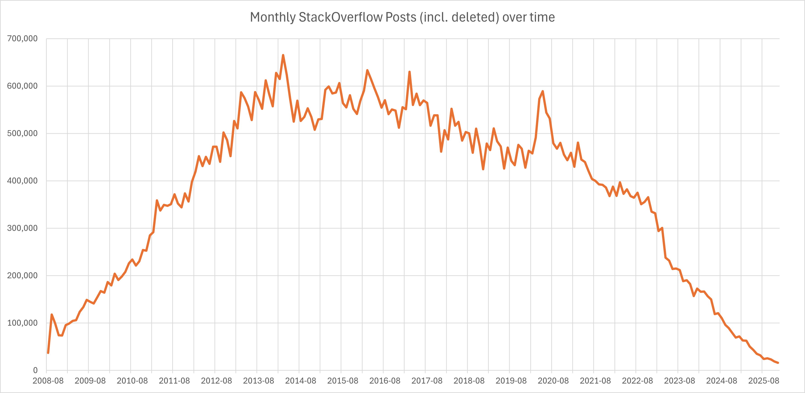

The Last Language You Can Read
There's a motto I came across in high school that stuck with me: standing on the shoulders of giants. Progress isn't lone genius. It's accumulated effort, each generation inheriting the work of the last and pushing it slightly further forward. New languages get built because practitioners feel friction acutely enough to do something about it. The community argues, refines, and eventually something better wins.
I've been thinking about what happens when that process quietly stops working. Not through any single failure, but through the accumulation of pressures that each seem reasonable on their own.
The noise problem
Stack Overflow is largely dead. Not officially, not yet, but if you've spent any time there recently you'll know what I mean. The signal-to-noise ratio has collapsed. GitHub, meanwhile, is drowning in volume. Repositories multiply faster than anyone can meaningfully evaluate them, and the result is that finding something genuinely good has become an exercise in archaeology.

Neil Postman argued in Amusing Ourselves to Death that the real threat to culture wasn't Orwellian oppression from above, it was Huxleyan saturation from within. We don't need a boot on our necks if we're already too distracted to notice the problems that matter. I think something similar is happening in software. We haven't run out of code. We've run out of attention to evaluate it.
Richard Gabriel identified an early version of this dynamic in his 1989 essay "Worse is Better." His argument was that simpler, less correct systems tend to beat more elegant ones in the wild because they spread faster. They're easier to port, easier to adopt, easier to tolerate. The right thing loses to the "good enough" thing because the "good enough" thing has better network dynamics.
AI-generated code might be accelerating this in ways that are difficult to reverse. The volume of plausible, functional, mediocre code is increasing dramatically. And there is nothing more permanent than something temporary that works.
Gatekeeping as a feature, not a bug
The Linux kernel project has wrestled with this for years. For a long time, the single biggest bottleneck wasn't contribution, it was review. The most valuable members of the community weren't the people writing code, they were the people responsible for deciding what got merged.
Eric Raymond described two models in "The Cathedral and the Bazaar": the cathedral, built slowly and carefully by a small group; the bazaar, chaotic and open to all. Raymond was optimistic about the bazaar. Linux proved that openness could produce quality. But what he perhaps underestimated was that even the bazaar needs curators. The kernel's review bottleneck is the cathedral inside the bazaar. This is the bit that you cannot crowdsource.
There has always been some degree of necessary gatekeeping in open source. You cannot maintain a standard and simultaneously accept everything you're offered. Quality and volume are in tension. The frontier only moves forward because someone is willing to say no.
What has changed is the ratio. The volume of generated code has increased by several orders of magnitude. The number of people capable of meaningful review has not.
Essential problems don't have silver bullets
Fred Brooks drew a distinction in his 1987 essay "No Silver Bullet" between accidental complexity and essential complexity. Accidental complexity is the friction that comes from our tools being imperfect: poor languages, awkward APIs, slow build systems. Essential complexity is inherent to the problem itself. It can't be engineered away because it is the problem.
AI tooling handles accidental complexity reasonably well. It can write boilerplate, suggest completions, catch common errors. More than that, LLMs are functioning as a translation layer between human intent and machine instruction. They absorb the pain of language quirks, API inconsistencies, and syntactic friction so the developer doesn't have to feel it.
That sounds like progress. But consider what we lose. Accidental complexity is uncomfortable, and discomfort is a signal. When C++ introduced multiple inheritance, the resulting mess wasn't just annoying. It was diagnostic. It told the community something real about the limits of the object-oriented model. That pain drove people toward better abstractions. If an LLM had simply papered over the complexity and made C++ multiple inheritance feel easy, we'd still be using it. The signal never would have reached anyone.
What AI tooling has almost nothing to say about is essential complexity: the hard design questions, the fundamental trade-offs, the moments where you have to decide what a system is actually for. Code review, done properly, is largely an exercise in navigating exactly that. It's about maintaining coherence, enforcing standards, transmitting tacit knowledge, and asking whether the thing being built is solving the right problem in the right way. Automating the surface while losing the substance isn't a solution. It's a way of appearing to solve a problem while quietly making it worse.
The language you think in shapes what you can think
Dijkstra argued in his 1972 Turing Award lecture, "The Humble Programmer," that the tools we use to express computation are not neutral. The choice of language is a moral question as much as a technical one. It shapes what we can say, what we can conceive, and what we're likely to miss. The programmer who is limited to thinking in a particular language is limited in the problems they can formulate, not just the solutions they can produce.
Paul Graham pushed a version of this further in "Beating the Averages," arguing that Lisp gave his startup the ability to think thoughts that competitors working in Java or C++ simply couldn't access. Whether you buy the Lisp maximalism or not, the underlying claim is worth taking seriously: the language you think in shapes what you're capable of thinking.
This is the deeper stake. It's not just that we might stop building new languages. It's that we might stop being able to conceive of certain categories of solution. If the tools we use to reason about computation stop evolving, our collective ability to think about hard problems contracts with them.
The pioneers problem
Programming language development, more than almost any other area of software, has depended on frontiersmen. People who identified that the existing tools were limiting human expression, not just performance, and built something new to close the gap.
In 2007, Robert Griesemer, Rob Pike, and Ken Thompson were at Google, frustrated. The languages available to them couldn't cleanly express what they were trying to build at scale. So they created Go: compiled fast, safe, built for distributed systems, and deliberately simple. It solved a human problem that humans could articulate because they'd felt it.
That's the thing. They felt the friction first. The language came second.
Would an LLM identify that kind of friction? Probably not. LLMs are trained on existing expression. They are, by design, retrospective. They optimise toward what has already been written, which makes them genuinely powerful for working within established paradigms and genuinely limited when it comes to recognising that a paradigm has run its course.
This retrospective bias has a concrete, observable consequence that most people haven't fully thought through. Because there is always more information in the past than the present, there are always more training examples from what has been than from what is. The probability weights are stronger there. This is one of the reasons LLMs so frequently surface old versions of libraries as recommendations. It's not a bug in the system. It's the system working correctly. The past is simply more legible to it than the present.
And even if an AI-adjacent process somehow produced a new language, how would it get traction? There wouldn't be fresh training examples to draw from. But more fundamentally, there wouldn't be the human infrastructure that new languages actually depend on: the early adopters, the champions, the angry blog posts, the conference talks, the library authors who bet their time on something unproven. That bootstrapping problem is one that communities solve, not models.
The graveyard here is instructive. D, Nim, Haxe, Crystal: all solved real problems, all failed to reach critical mass. The barrier to a new language was never creating it. It was building the coordination layer around it thick enough that it became worth writing libraries for, which made it worth learning, which made it worth hiring for. Niklaus Wirth built Pascal, then Modula, then Oberon. Each a genuine step forward, each largely ignored in favour of C.
Good ideas don't automatically win. They need carriers.
Which raises a question I don't think has been taken seriously enough yet: if the path to mainstream adoption increasingly runs through LLM recommendation rather than community momentum, what does it look like to game that? How do you get an LLM to surface your language instead of the incumbents? We already know that probability weights favour volume. So are we going to start seeing synthetic GitHub repositories stuffed with LLM-generated code, not to be used, but to shift training distributions? To slip a language or library into the collective consciousness by sheer weight of manufactured presence? The incentive is already there. The tooling to do it cheaply is already there. The question is whether the people building the next generation of infrastructure understand what they'd be walking into.
The corporate incentive question
Companies have always created languages and tools to solve problems they actually had. Go came from Google's internal pain. Rust came from Mozilla's browser engine. Swift came from Apple's frustration with Objective-C. They made those tools public partly out of genuine goodwill, partly to attract talent, and partly because they understood that a healthy external community made the technology better and made the company more interesting to work for.
That incentive structure depended on humans being expensive. If the cost of software development drops significantly through AI tooling, something in that calculation shifts, though probably not uniformly. The more interesting question might be whether the type of thing that gets open sourced changes rather than whether open sourcing stops altogether. Infrastructure and tooling are still strong candidates for release, because shaping standards and locking in ecosystems is valuable regardless of how code gets written. Google has done this deliberately and repeatedly. What becomes less likely is the release of genuinely novel languages and paradigms: the things that were shared because they needed communities to stress-test and develop them. If that work can be done internally with AI tooling, the case for giving it away weakens significantly.
The worry isn't that companies stop open sourcing. It's that they open source the things that benefit them as platforms and quietly stop releasing the things that would benefit the field.
What if the next language isn't for us?
Every programming language ever built has shared one assumption: the audience is human. Not just the end user, but the author. Comments, naming conventions, readability guidelines, the entire discipline of software craftsmanship - all of it presupposes a person on the other end, trying to reason about what the code is doing and why.
We've been layering abstractions in one direction for seventy years. Assembly gave humans a readable wrapper around machine code. High-level languages gave us expressive syntax that maps closer to human reasoning than to hardware reality. Each step moved the code further from the machine and closer to the way people think. That trajectory has always felt inevitable, like the natural direction of progress.
But consider what happens when LLMs become the primary author and the primary reader. The format that optimises for machine-to-machine communication looks nothing like the format that optimises for human comprehension. We've already lived through a version of this transition: JSON is technically human-readable, and in practice nobody reads it. Protobuf is faster, smaller, and illegible by default, and that trade-off was worth making the moment machine throughput mattered more than human inspection. The illegibility is a feature.
The same logic applies to code. If the thing writing the software and the thing reviewing the software are both models, the pressure to maintain human readability quietly disappears. What emerges might look less like a programming language and more like an intermediate representation: technically inspectable, practically opaque, optimised for a reader that doesn't get tired, doesn't need variable names to be meaningful, and has no use for comments.
This is where the abstraction layer argument inverts. We've spent decades abstracting upward, away from machine concerns and toward human ones. LLMs introduce pressure in the opposite direction: abstracting downward, away from human legibility and toward machine efficiency. The next language might not be something practitioners read fluently. It might not be something they read at all.
And if that happens, the question of who builds programming languages, who maintains them, who argues about their design in mailing lists and conference talks, stops being a community question. It becomes an infrastructure question. Decided quietly, internally, by whoever controls the models.
Where we're left
I think there are a few questions here that don't have clean answers yet, and I'm more interested in naming them honestly than pretending otherwise.
Where does innovation come from now? The old model relied on practitioners feeling friction acutely enough to do something about it. If the friction is increasingly absorbed by tooling rather than experienced by the developer, does the signal that drives language design still reach anyone? And if Dijkstra was right, if the language shapes the thought, what happens to our collective reasoning about hard problems if the language layer stagnates?
How do we solve the code review bottleneck? Volume is increasing. The people capable of meaningful review are not multiplying to match. AI tooling addresses accidental complexity passably and essential complexity barely at all. That gap matters.
And when genuine innovation does appear, how do we surface and refine it? The mechanisms that used to do that work, forums, mailing lists, conference circuits, early adopter communities, are all under pressure from the same noise problem we started with. Worse-is-better dynamics don't favour the novel. They favour the familiar, the spread-ready, the good enough.
The giants are still there. I'm just not sure we've thought carefully enough about what happens if no one is building the shoulders anymore.

// what we're building
Covet is fixing the exact problem you just read about.
Structured mutual qualification: candidates and companies matched on fit, not keyword density. No spray-and-pray. No ghosting. Rejections that actually tell you why.
Get early access